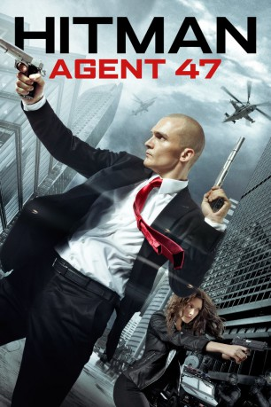

#2246 Hitman: Agent 47
 gesehen am 24.10.2015
gesehen am 24.10.2015
 
 IMDB-Wertung: 5.7 / 10
IMDB-Wertung: 5.7 / 10  Metascore: 28
Metascore: 28 
Der wortkarge, glatzköpfige Mann ist ein namensloser Auftragskiller, ein Hitman. Agent 47 wird er deshalb genannt, weil das die letzten zwei Zahlen des Barcodes sind, die er als Tätowierung hinten auf seinem Kopf trägt. Die Markierung kennzeichnet ihn als einen der genetisch veränderten Auftragsmörder, die zur absoluten Elite auf ihrem Gebiet gehören. Sein neuster Auftrag setzt Agent 47 auf eine junge Frau namens Katia van Dees an, die auf der Flucht ist. Anstatt sauber über die Bühne zu gehen, entpuppt sich die Mission jedoch als äußerst schwierig. Der sonst so routinierte Hitman wird mit Enthüllungen bezüglich seiner Vergangenheit konfrontiert, die mit seinem Opfer in unmittelbarem Zusammenhang stehen. Auf einmal gerät er selbst in Gefahr und muss sich gegen Gegner wie den gefährlichen John Smith zur Wehr setzen.
Jahr: 2015
Dauer: 96 Minuten
FSK: 16
Land: USA Studio: 20th Century FoxTonspuren:
Untertitel: Deutsch,
Auflösung: 1080p (1920x804) Größe: 7004 MB
Genre: Action, Thriller, Krimi
Regisseur: Aleksander Bach
Drehbuch: Skip Woods, Michael Finch, Skip Woods, Morten Iversen, Peter Gjellerup Koch
Soundtrack: Marco Beltrami
Darsteller:
 Angelababy als Diana
Angelababy als Diana Dan Bakkedahl als Sanders
Dan Bakkedahl als Sanders Michaela Caspar als Hall of Records Clerk
Michaela Caspar als Hall of Records Clerk Rupert Friend als Agent 47
Rupert Friend als Agent 47 Ciarán Hinds als Litvenko
Ciarán Hinds als Litvenko Sebastian Hülk als Garad
Sebastian Hülk als Garad Rolf Kanies als Dr. Delriego
Rolf Kanies als Dr. Delriego Thomas Kretschmann als Le Clerq
Thomas Kretschmann als Le Clerq- Mona Pirzad als Katia's Mother
 Jürgen Prochnow als Tobias
Jürgen Prochnow als Tobias Zachary Quinto als John Smith
Zachary Quinto als John Smith Johannes Suhm als Young Litvenko
Johannes Suhm als Young Litvenko Hannah Ware als Katia
Hannah Ware als Katia- Jessica Lois als Woman in Subway Station , uncredited
- Prince William E. Morris als Surveillance Tech , uncredited
 Emilio Rivera als Fabian , uncredited
Emilio Rivera als Fabian , uncredited- Gillian Tan als Woman in Airport , uncredited
 Joe Toedtling als Marine , uncredited
Joe Toedtling als Marine , uncredited- Charlene Beck als Tenement Woman
- Michael Bornhütter als Berlin Police Officer #1
- Melissa Broughton als Gardens by the Bay Woman with Baby
- Nils Brunkhorst als Syndicate Doctor
- Alvin Chan als Gardens by the Bay Man #1
- Michael Corcoran als Robert's Dad
- Manuel Depta als Russian Soldier
- Andrew Di Bartolomeo als Gardens by the Bay Man #2
- Georg Ebinal als Salzburg Syndicate Operator Driver
- Jörg Ellmer als Russian Soldier
- Waye Leon Goh als Gardens by the Bay Man #3
- Matthias Günther als Marine Task Force
- Jesse Hergt als Young Agent 47
 Jerry Hoffmann als Franco
Jerry Hoffmann als Franco- Florian Hotz als Lead Syndicate Operator
- Tomas Jester als Tenement Man
- Michael Knese als Embassy Marine #2
- Felix Koch als Salzburg Syndicate Operator Driver #1
- Alrik Kreemke als Salzburg Syndicate Operator #1
- Daniel Michael Nelson als Robert - Kid in Elevator
- Peter Paes als Salzburg Syndicate Operator Driver #2
- Helena Pieske als Young Katia
- Markus Ranglack als Russian Agent / Driver
- Kira Smidt als Baby Katia
- Daniel Stockhorst als John Smith's G-Wagon Driver
- Eskindir Tesfay als Marine #2
- Asuka Tovazzi als Berlin Police Officer
- Janice Koh Yu-Mei als Robert's Mum
- Melanie Benna als Businesswoman , uncredited
- David Brückner als Syndicate International Hacker , uncredited
- Ricardo Ewert als Russian Officer , uncredited
- Dennis Heath als Bystander in Action Scene , uncredited
Datei: X:\2015(G-M)\Hitman Agent 47 (2015, FSK16, 1920x804).mkv seit 23.10.2015
Festplatte: HD 2015(A-Z)
 Es gibt insgesamt 129 Filme in der Gruppe '2015(G-M)'
Es gibt insgesamt 129 Filme in der Gruppe '2015(G-M)'